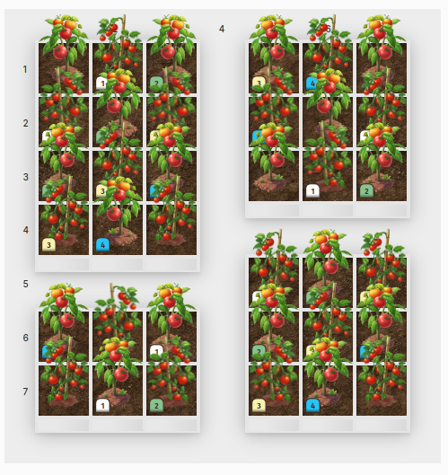
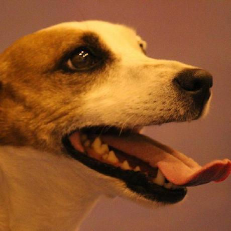
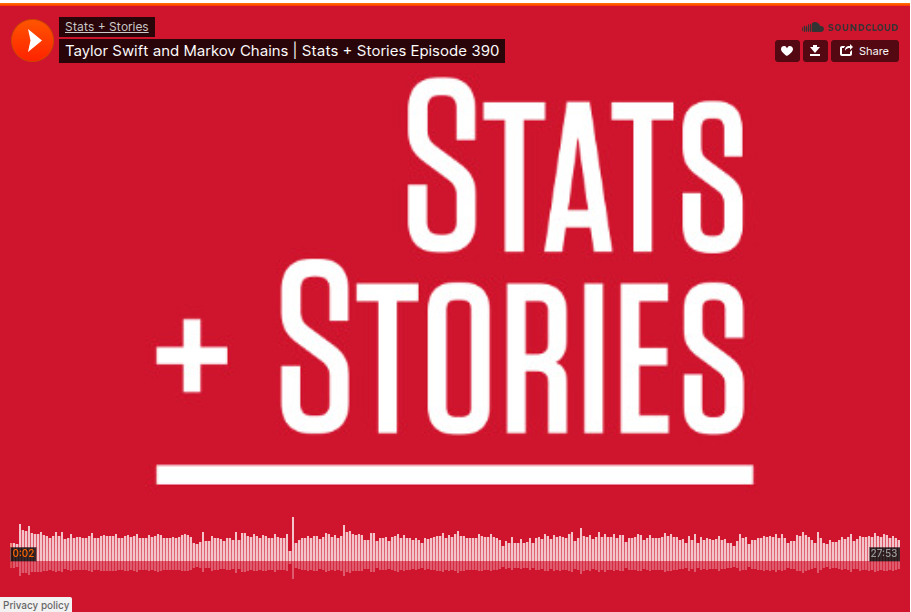
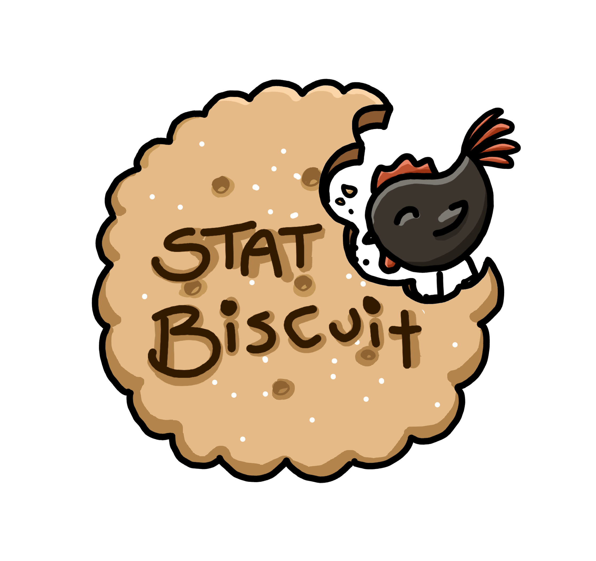

Farm Rescue: Tomato Trials
A web-based virtual experimental design platform developed for statistics teaching, allowing students to collect and analyse data without the logistical challenges of physical experiments!

I spend my time teaching statistics,
coding (then fixing bugs),
pandering to my pets,
and baking bread!
I am a Senior Lecturer in the School of Mathematics and Statistics at the University of St Andrews and a member of the Centre for Research into Ecological and Environmental Modelling (CREEM). Prior to joining St Andrews in 2026, I was a Senior Lecturer in the Department of Statistics at the University of Auckland, New Zealand.
My research focuses on spatial and spatiotemporal statistics, point process modelling, and statistical ecology. I develop statistical methodology for modelling complex event and pattern data, with a particular interest in self-exciting phenomena, where past events influence the occurrence of future events. Much of my work focuses on Hawkes processes, log-Gaussian Cox processes, and related methods for modelling spatial and spatiotemporal data.
I enjoy collaborating with researchers from a wide range of disciplines and have worked on projects involving marine mammals, biodiversity, public health, cancer pathology, terrorism, social systems, and animal movement. I also develop open-source software to help make modern point process methods easier to use and more widely available.
Alongside my research, I am passionate about statistics education. My education research explores topics such as peer review, authentic assessment, and interactive approaches to learning statistics. I especially enjoy creating teaching resources that help students engage with statistical ideas in meaningful and enjoyable ways!
van Helsdingen, A.B.M. & Jones-Todd, C.M. (2026). A Spatial capture-recapture model with Hawkes-inspired detection rates to account for animal movement . Journal of Agricultural, Biological and Environmental Statistics.
de Aquino Klemm, M.F. & Jones-Todd, C.M. (2026). We were in screaming colour: Colours of the Taylor Swift universe: a statistical story . Significance.
Jones-Todd, C.M. & Renelle, A. (2025). A comparison of peer- and tutor-grading of an introductory R coding assessment . Journal of Statistics and Data Science Education.
Jones-Todd, C.M. & van Helsdingen, A.B.M. (2024). stelfi: An R package for fitting Hawkes and log-Gaussian Cox point process models . Ecology and Evolution.
Jones-Todd, C.M., Caie, P., Illian, J.B., Stevenson, B.C., Savage, A., Harrison, D.J. & Bown, J.L. (2019). Identifying prognostic structural features in tissue sections of colon cancer patients using point pattern analysis . Statistics in Medicine.
Python, A., Illian, J.B., Jones-Todd, C.M. & Blangiardo, M. (2019). A Bayesian approach to modelling subnational spatial dynamics of worldwide non-state terrorism, 2010-2016 . Journal of the Royal Statistical Society Series A.
Jones-Todd, C.M., Swallow, B., Illian, J.B. & Toms, M. (2018). A spatio-temporal multi-species model of a semi-continuous response . Journal of the Royal Statistical Society Series C.
I supervise PhD, Masters, Honours, and Summer Research Scholarship students. Current projects include statistical literacy, spatial statistics, point processes, and statistical ecology. If you are interested in working on a postgraduate research project under my supervision, then please feel free to send me an email!

A web-based virtual experimental design platform developed for statistics teaching, allowing students to collect and analyse data without the logistical challenges of physical experiments!

Featured on the Stats + Stories podcast discussing statistical approaches to understanding patterns in Taylor Swift`s concert performances, outfit choices, and surprise-song selections using Markov chains and related probabilistic models.

A selection of R and stats focused mini games for classroom entertainment